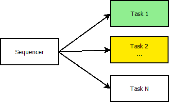
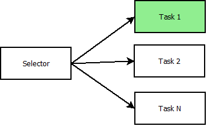
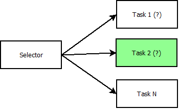
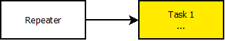
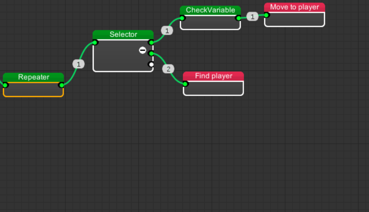
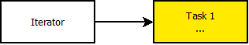
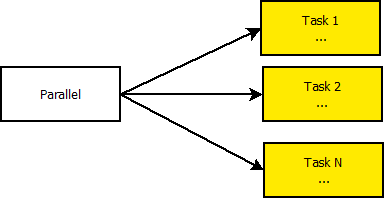

MoonBehavior Comes with a lot of default build-in nodes that you can use.
In this page will explain the functionality of basic nodes.
Sequencer

Sequencer like his name says executes sequencially every task by order from minor to mayor.
Returns SUCCESS when all tasks are successed, FAIL when any task fails, otherwise it will return RUNNING.
It's good for sequencial events.

Selector

Selector Executes task sequencially (like sequencer) but it will not pass to the next task until the current task fails.
Returns SUCCESS if the current task are successed , RUNNING if the current task are running , and FAILURE if all the childs tasks fails or it has no childs.
Options
Randomize: If enabled it will sort and executes the childs Ramdomly.
It's good for IF-ELSE Sequences

Random Selector

Random selector
Works like selector but select it's childs based on the priority of every child node, mayor priority means more selection probability.
Repeater

Repeats a child Task every tick.
Options
Repeat until: Repeat mode: SUCCESS; Repeats until the child node returns Success, FAILURE; Repeats until the child node retunrs Failure, FOREVER; Repeats forever.
Returns Success When the repeat condition fails, otherwise returns running
it's good for continuos executions.

Iterator

Repeats a child task every tick (like Repeater) but with a limited repeat count.
Options
Repeat count: Maximun child repetitions.
Returns SUCCESS when repetitions are finished, otherwise returns RUNNING.
Parallel

Executes all childs simultaneously every tick
Returns RUNNING.
Inverter

Like ! Operator Returns the inverter the result of it's child Task.
SUCCESS becomes FAILURE
FAILURE becomes SUCCESS.